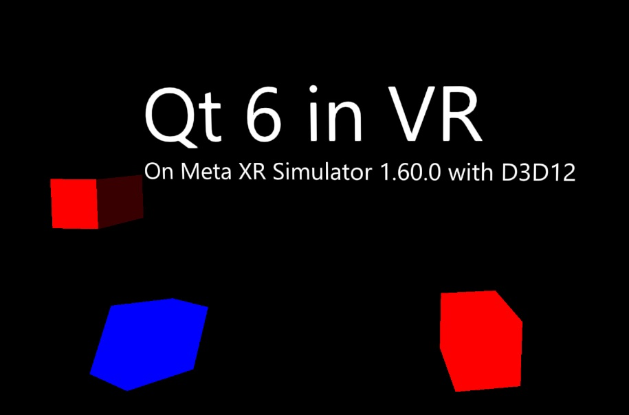

Qt Quick 3D - XR Simple Example
Demonstrates setting up a simple VR scene with Qt Quick 3D XR.

This example gives an introductory overview of the basic Qt Quick 3D Xr features.
The main difference when writing an XR application is that the root item of our main.qml is an XrView instead of a Window with a View3D:
import QtQuick3D import QtQuick3D.Xr XrView { id: xrView XrErrorDialog { id: err } onInitializeFailed: (errorString) => err.run("XRView", errorString) referenceSpace: XrView.ReferenceSpaceLocalFloor
The XrView contains the 3D scene, just like a View3D. In this example we add an XrErrorDialog that will show an error dialog if we get an error initializing the VR headset when streaming from a desktop PC. We also specify that the reference frame for this application is measured from the floor of the room where the user is located. That is, the floor will be at y = 0.
The origin of the reference frame is defined by the XrOrigin:
xrOrigin: theOrigin
XrOrigin {
id: theOrigin
XrController {
controller: XrController.LeftController
poseSpace: XrController.AimPose
CubeModel { color: "blue" }
}
XrController {
controller: XrController.RightController
poseSpace: XrController.AimPose
CubeModel { color: "red" }
}
}
In this example we add two XrController items, one for each hand. They will track the position and orientation of the user's hands. Since XrController is a Node, any children will automatically follow the hand movements. In this case, we use a simple model of a cube to visualize the controller's position.
The rest of main.qml is a normal Qt Quick 3D scene.